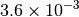
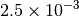
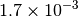
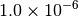
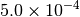
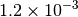
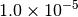
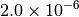
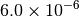

Geometry Optimization¶
Code author: Rollin A. King
Section author: Rollin A. King and Lori A. Burns
Module: Keywords, PSI Variables, OPTKING
PSI4 carries out molecular optimizations using a module called optking. The optking program takes as input nuclear gradients and, optionally, nuclear second derivatives — both in Cartesian coordinates. The default minimization algorithm employs an empirical model Hessian, redundant internal coordinates, a RFO step, and the BFGS Hessian update.
The principal literature references include the introduction of redundant internal coordinates by Peng et al. [Peng:1996:49]. The general approach employed in this code is similar to the “model Hessian plus RF method” described and tested by Bakken and Helgaker [Bakken:2002:9160]. (However, for separated fragments, we have chosen not to employ by default their “extra-redundant” coordinates defined by their “auxiliary interfragment” bonds. These can be included via the option ADD_AUXILIARY_BONDS).
The internal coordinates are generated automatically based on an assumed bond connectivity. The connectivity is determined by testing if the interatomic distance is less than the sum of atomic radii times the value of COVALENT_CONNECT. If the user finds that some connectivity is lacking by default, then this value may be increased. Otherwise, the internal coordinate definitions may be modified. If one desires to see or modify the internal coordinates being used, then one can set INTCOS_GENERATE_EXIT to true. The internal coordinate definitions are provided in the file named “intco.dat”. See the Optimizing Minima section for more detail.
The ongoing development of optking is providing for unique treatment of coordinates which connect distinct molecular fragments. Thus, several keywords relate to “interfragment modes”, though many of these capabilities are still under development. Presently by default, separate fragments are bonded by nearest atoms, and the whole system is treated as if it were part of one molecule. However, with the option FRAG_MODE, fragments may instead be related by a unique set of interfragment coordinates defined by reference points within each fragment. The reference points can be atomic positions (current default), linear combinations of atomic positions, or located on the principal axes (not yet working).
Basic Keywords¶
OPT_TYPE¶
Specifies minimum search, transition-state search, or IRC following
- Type: string
- Possible Values: MIN, TS, IRC
- Default: MIN
STEP_TYPE¶
Geometry optimization step type, either Newton-Raphson or Rational Function Optimization
- Type: string
- Possible Values: RFO, NR, SD
- Default: RFO
GEOM_MAXITER¶
Maximum number of geometry optimization steps
- Type: integer
- Default: 20
G_CONVERGENCE¶
Set of optimization criteria. Specification of any MAX_*_G_CONVERGENCE or RMS_*_G_CONVERGENCE options will append to overwrite the criteria set here unless FLEXIBLE_G_CONVERGENCE is also on. See Table Geometry Convergence for details.
- Type: string
- Possible Values: QCHEM, MOLPRO, GAU, GAU_LOOSE, GAU_TIGHT, GAU_VERYTIGHT, TURBOMOLE, CFOUR, NWCHEM_LOOSE
- Default: QCHEM
FULL_HESS_EVERY¶
Frequency with which to compute the full Hessian in the course of a geometry optimization. 0 means to compute the initial Hessian only, 1 means recompute every step, and N means recompute every N steps. The default (-1) is to never compute the full Hessian.
- Type: integer
- Default: -1
INTCOS_GENERATE_EXIT¶
Do only generate the internal coordinates and then stop?
- Type: boolean
- Default: false
Optimizing Minima¶
First, define the molecule and basis in the input.
molecule h2o {
O
H 1 1.0
H 1 1.0 2 105.0
}
set basis dz
Then the following are examples of various types of calculations that can be completed.
Optimize a geometry using default methods (RFO step):
optimize('scf')
Optimize using Newton-Raphson steps instead of RFO steps:
set step_type nr optimize('scf')Optimize using energy points instead of gradients:
optimize('scf', dertype='energy')
Optimize while limiting the initial step size to 0.1 au:
set intrafrag_step_limit 0.1 optimize('scf')Optimize while always limiting the step size to 0.1 au:
set { intrafrag_step_limit 0.1 intrafrag_step_limit_min 0.1 intrafrag_step_limit_max 0.1 } optimize('scf')Optimize while calculating the Hessian at every step:
set full_hess_every 1 optimize('scf')
Hessian¶
If Cartesian second derivatives are available, optking can read them and transform them into internal coordinates to make an initial Hessian in internal coordinates. Otherwise, several empirical Hessians are available, including those of Schlegel [Schlegel:1984:333] and Fischer and Almlof [Fischer:1992:9770]. Either of these or a simple diagonal Hessian may be selected using the INTRAFRAG_HESS keyword.
All the common Hessian update schemes are available. For formulas, see Schlegel [Schlegel:1987:AIMQC] and Bofill [Bofill:1994:1].
The Hessian may be computed during an optimization using the FULL_HESS_EVERY keyword.
Transition States, Reaction Paths, and Constrained Optimizations¶
Calculate a starting Hessian and optimize the “transition state” of linear water (note that without a reasonable starting geometry and Hessian, such a straightforward search often fails):
molecule h2o { O H 1 1.0 H 1 1.0 2 160.0 } set { basis dz full_hess_every 0 opt_type ts } optimize('scf')At a transition state (planar HOOH), compute the second derivative, and then follow the intrinsic reaction path to the minimum:
molecule hooh { symmetry c1 H O 1 0.946347 O 2 1.397780 1 107.243777 H 3 0.946347 2 107.243777 1 0.0 } set { basis dzp opt_type irc geom_maxiter 50 } frequencies('scf') optimize('scf')Generate the internal coordinates and then stop:
set intcos_generate_exit true optimize('scf')The coordinates may then be found in the file “intco.dat”. In this case, the file contains:
F 1 3 R 1 2 R 1 3 B 2 1 3
The first line indicates a fragment containing atoms 1-3. The following lines define two distance coordinates (bonds) and one bend coordinate. This file can be modified, and if present, is used in subsequent optimizations. Since the multiple-fragment coordinates are still under development, they are not documented here. However, if desired, one can change the value of FRAG_MODE, generate the internal coordinates, and see how multiple fragment systems are defined.
Coordinates may be frozen or fixed by adding an asterisk after the letter of the coordinate. To optimize with the bond lengths fixed at their initial values, it is currently necessary to generate and then modify the internal coordinate definitions as follows:
F 1 3 R* 1 2 R* 1 3 B 2 1 3
Convergence Criteria¶
Optking monitors five quantities to evaluate the progress of a geometry optimization. These are (with their keywords) the change in energy (MAX_ENERGY_G_CONVERGENCE), the maximum element of the gradient (MAX_FORCE_G_CONVERGENCE), the root-mean-square of the gradient (RMS_FORCE_G_CONVERGENCE), the maximum element of displacement (MAX_DISP_G_CONVERGENCE), and the root-mean-square of displacement (RMS_DISP_G_CONVERGENCE), all in internal coordinates and atomic units. Usually, these options will not be set directly. Primary control for geometry convergence lies with the keyword G_CONVERGENCE which sets the aforementioned in accordance with Table Geometry Convergence.
| G_CONVERGENCE | Max Energy | Max Force | RMS Force | Max Disp | RMS Disp |
|---|---|---|---|---|---|
| NWCHEM_LOOSE [4] |  |
 |
 |
 | |
| GAU_LOOSE [6] |  |  |  |
 |
|
| TURBOMOLE [4] |  |  |
 | |
|
| GAU [3] [6] |  |
 |
 |
 | |
| CFOUR [4] |  |
||||
| QCHEM [1] [5] | |
||||
| MOLPRO [2] [5] | |
|
|||
| GAU_TIGHT [3] [6] |  |
 |  |
 |
|
| GAU_VERYTIGHT [6] |  |  |  |
Footnotes
| [1] | Default |
| [2] | Baker convergence criteria are the same. |
| [3] | (1, 2) Counterpart NWCHEM convergence criteria are the same. |
| [4] | (1, 2, 3) Convergence achieved when all active criteria are fulfilled. |
| [5] | (1, 2, 3) Convergence achieved when Max Force and one of Max Energy or Max Disp are fulfilled. |
| [6] | (1, 2, 3, 4, 5) Normal convergence achieved when all four criteria (Max Force, RMS Force, Max Disp, and RMS Disp) are fulfilled. To help with flat potential surfaces, alternate convergence achieved when 100rms force is less than RMS Force criterion. |
For ultimate control, specifying a value for any of the five monitored options activates that criterium and overwrites/appends it to the criteria set by G_CONVERGENCE. Note that this revokes the special convergence arrangements detailed in notes [5] and [6] and instead requires all active criteria to be fulfilled to achieve convergence. To avoid this revokation, turn on keyword FLEXIBLE_G_CONVERGENCE.
Output¶
The progress of a geometry optimization can be monitored by grepping the output file for the tilde character (~). This produces a table like the one below that shows for each iteration the value for each of the five quantities and whether the criterion is active and fulfilled (*), active and unfulfilled ( ), or inactive (o).
--------------------------------------------------------------------------------------------- ~
Step Total Energy Delta E MAX Force RMS Force MAX Disp RMS Disp ~
--------------------------------------------------------------------------------------------- ~
Convergence Criteria 1.00e-06 * 3.00e-04 * o 1.20e-03 * o ~
--------------------------------------------------------------------------------------------- ~
1 -38.91591820 -3.89e+01 6.91e-02 5.72e-02 o 1.42e-01 1.19e-01 o ~
2 -38.92529543 -9.38e-03 6.21e-03 3.91e-03 o 2.00e-02 1.18e-02 o ~
3 -38.92540669 -1.11e-04 4.04e-03 2.46e-03 o 3.63e-02 2.12e-02 o ~
4 -38.92548668 -8.00e-05 2.30e-04 * 1.92e-04 o 1.99e-03 1.17e-03 o ~
5 -38.92548698 -2.98e-07 * 3.95e-05 * 3.35e-05 o 1.37e-04 * 1.05e-04 o ~
The full list of keywords for optking is provided in Appendix OPTKING.
Information on the Psithon function that drives geometry optimizations is provided at optimize().